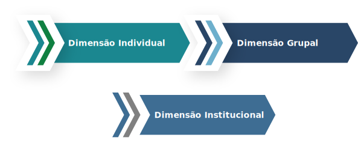

TÓPICO 3
DESENVOLVENDO O POTENCIAL DE LIDERANÇA
TÓPICO 3
DESENVOLVENDO O POTENCIAL DE LIDERANÇA
Peduzzi e Ciampone (2012) destacam a importância de investir em três dimensões para potencializar o trabalho em equipe.
Clique sobre as dimensões para conhecê-las.
DIMENSÃO INDIVIDUAL
São os investimentos pessoais em prol da busca pelo autoconhecimento. Contudo, a escassez de habilidades pessoais para mobilizar o potencial interno pode ser resultado de: falta de experiências e interações que oportunizem a aprendizagem; sentimentos negativos que dificultam a utilização dessas habilidades; divergências entre a extensão dos problemas reais e as ferramentas que a pessoa disponibiliza para enfrentá-los.
DIMENSÃO GRUPAL
São os investimentos do grupo em prol da aprendizagem coletiva e da análise ampliada das situações-problema; identificação de possibilidades e alternativas; sentimentos que permeiam o campo grupal, podendo ser explícitos e implícitos.
DIMENSÃO INSTITUCIONAL
SSão os investimentos diversos, tais como: transformações da filosofia, da estruturada organizacional e das políticas de gestão de pessoal, elementos essenciais para o trabalho em equipe.